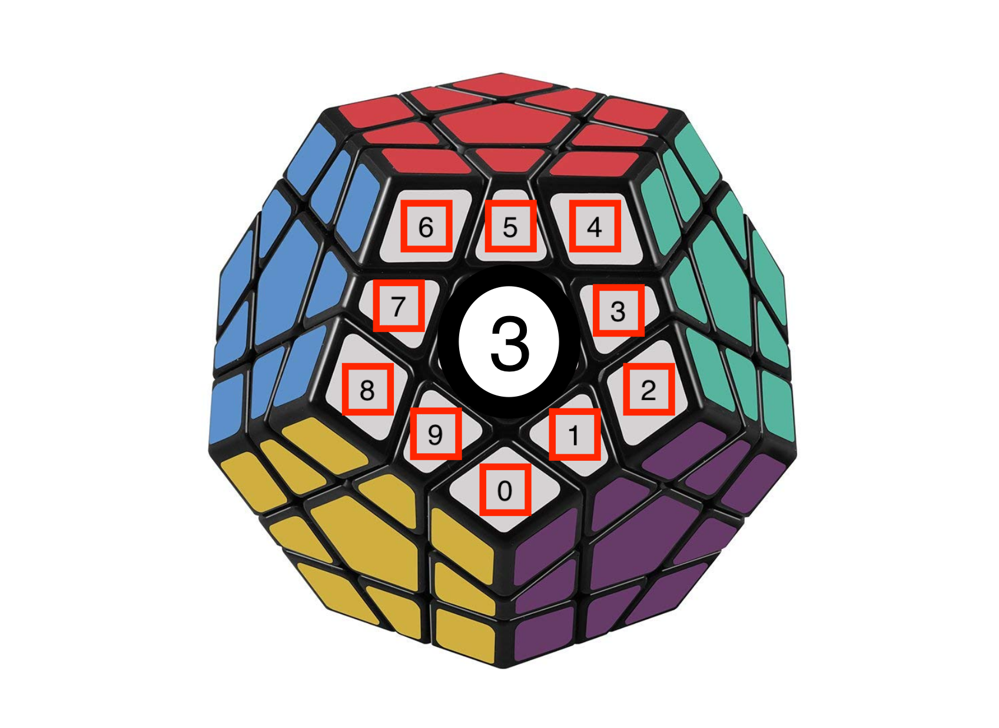

{kind=link}

Figure 1:
Each color face is given a number value. For instance, the White face is Face #3. Each of the nodes is also given a number. The faces and nodes are stored in a 2D int array..
Create, randomize, and solve a virtual Megaminx puzzle.
A Megaminx is a dodecahedron puzzle similar to a Rubik's Cube. It has 12 pentagonal faces, each a different color (Figure 1). Each face can be turned clockwise or counterclockwise. The 3D Megaminx is decomposed into a 2D model (Figure 2) and then randomized based on the number of moves that the user input. Subsequently, the solved Megmainx is rotated in random directions, an example of which is shown in Figure 3. The initial randomization is shown in standard output as shown in Figure 4. The steps taken to solve the initial randomized Megaminx are also printed.
Compile with g++ megaminx.cpp
Run with ./a.out (Mac) or ./a.exe (PC)
Input the number of moves you'd like to randomize the Megaminx when prompted. Solution is then printed to stdout.
Each color face is given a number value. For instance, the White face is Face #3. Each of the nodes is also given a number. The faces and nodes are stored in a 2D int array..
The representation of the faces and nodes of the Megaminx in relation to each other in the virtual model. Each face interacts with the faces adjacent to it, represented by the connecting lines.
Figure 3: Shows what a turn for Face 3 looks like. The Faces and Nodes which move around for that turn are circled in red. All other Faces and Nodes remain the same for that turn. These cycles were encoded for each face.
Figure 4: Shows the standard output representing the Faces and Nodes, matching the ones shown in Figure 3.
{kind=link}
{kind=link}
{kind=link}